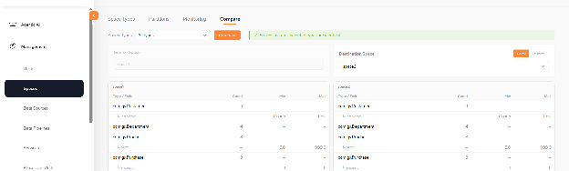
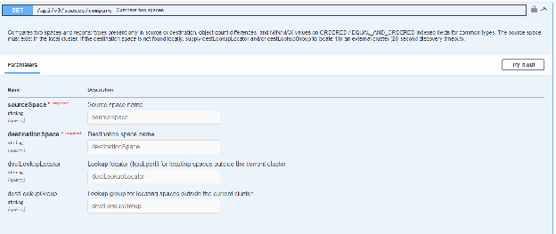
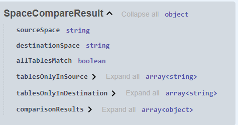
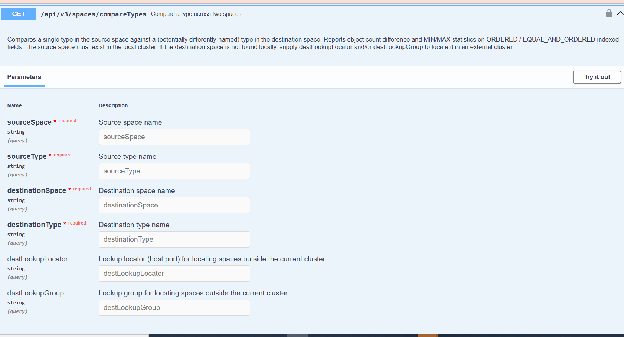
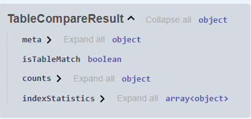

You can compare data between two spaces - this looks for tables that exist only in the source space or only in the destination space, and lists them. For tables that exist in both spaces, it compares counts, and min/max values of properties that have ordered indexes in both spaces' tables.
This can be used to understand the difference between two spaces that replicate to each other, or to understand gaps between environments. The spaces can be on the same cluster, or on different clusters.
You can also compare just a specific type instead of comparing all types.

GET /api/v3/spaces/compare
Compares two spaces and reports types present only in source or destination, object count differences, and MIN/MAX statistics on ORDERED / EQUAL_AND_ORDERED indexed fields for common types. The source space must exist in the local cluster. If the destination space is not located locally, supply destLookupLocator and/or destLookupGroup to locate it in an external cluster (20 second discovery timeout).

Response Schema:

GET /api/v3/spaces/compareTypes
Compares a single type in the source space against a (potentially differently-named) type in the destination space. Reports object count difference and MIN/MAX statistics on ORDERED / EQUAL_AND_ORDERED indexed fields. The source space must exist in the local cluster. If the destination space is not located locally, supply destLookupLocator and/or destLookupGroup to locate it in an external cluster.

Response Schema:
